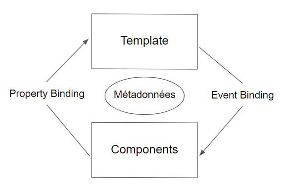

Bienvenue sur l'app de mathieu 
Le but de ce projet est de me familiariser avec le framework frontend javascript Angular.
Spécifications:
- Application créer avec Angular 12.2.6
- Utilisation du router Link, création de composants, création de services
- Utilisation de l'api Pexels
Fonctionnalités implémentées:
- Recherche de photo en fonction d'un mot clé
- Choix du nombre de photo à afficher
Fonctionnement d'Angular
L’architecture d’Angular
L’ architecture d’Angular est simplement un arbre hiérarchique avec pour parents et enfants des
components.Ces components sont réutilisables et indépendants rendant le code Angular hautement testable.
Angular est écrit en TypeScript. Il implémente des fonctionnalités de base et optionnelles sous la forme
d’un
ensemble de bibliothèques TypeScript que vous importez dans vos applications.
Chaque application Angular fonctionne grâce à au moins un component. C’est le component racine qui lie la
hiérarchie des components au DOM. Chaque component définit une classe qui contient les données et la logique de
l’application, et est associé à un modèle HTML qui définit une vue à afficher dans un environnement cible.
Les autres éléments de l’architecture sont les modules et les services. Les modules, les services et
les components
sont des classes qui utilisent des decorators. Ces decorators fournissent des métadonnées qui indiquent à Angular
comment les utiliser.
Les métadonnées d’un component s’associe à un modèle pour définir une vue. Un modèle est l’association d’un code
HTML avec des directives et un binding markup permettant à Angular de modifier le HTML avant de
l’afficher.
Les métadonnées d’un service fournissent les informations dont Angular a besoin pour les mettre à la
disposition
des components par le biais de l’injection de dépendances.
Les components définissent généralement de nombreuses vues, disposées hiérarchiquement. Le service Router
vous aide
à définir les chemins de navigation entre les vues.

QU’EST-CE QU’UN MODULE ?
Un module d’Angular aussi appelé NgModule, est un groupe de components, de directives, de pipes et de
services qui
construisent ensemble une fonctionnalité. Chaque application Angular possède un module racine, appelé
AppModule, qui
permet de lancer l’application. Une application contient généralement de nombreux modules fonctionnels.
Comme les modules JavaScript, les NgModules peuvent importer des fonctionnalités d’autres NgModules. Le fait de
pouvoir organiser votre code en séparant vos modules vous permet de les réutiliser dans d’autres applications et
ainsi gagner en productivité.
QU’EST-CE QU’UN COMPONENT ?
Les components sont des blocs de codes affichant une fonctionnalité. Ils peuvent être réutilisés dans les
modules
et les applications. Un component dans Angular fonctionne grâce à un fichier de classe, d’un modèle HTML et
d’un
fichier css/scss
Les directives du component donnent la logique du programme, et le data binding connecte l’application au DOM. Il y
a deux types de data binding :
- L’event binding permet à votre application de répondre aux inputs des utilisateurs dans l’environnement
cible en
mettant à jour les données de votre application.
- La property binding vous permet d’insérer des valeurs calculées à partir des données de votre application
dans
le
HTML.
Avant l’affichage d’une vue, Angular évalue les directives et résout la syntaxe de liaison dans le modèle pour
modifier les éléments HTML et le DOM, en fonction des données et de la logique de votre programme.
Angular prend en charge la liaison bidirectionnelle des données, ce qui signifie que les modifications du DOM,
telles que les choix de l’utilisateur, sont également prises en compte dans vos données de programme.
Vos modèles peuvent utiliser des pipes pour améliorer l’expérience de l’utilisateur en personnalisant les valeurs
affichées. Angular fournit des pipes prédéfinies pour les transformations courantes.

QU’EST CE QU’UN SERVICE ?
Pour les données ou la logique qui ne sont pas associées à une vue spécifique et que vous souhaitez partager entre
les components, vous créez un service. Le service est immédiatement précédé par le decorator @Injectable(). Le
decorator fournit les métadonnées qui permettent aux fournisseurs d’être injectés comme dépendances dans
votre
classe.
L’ injection des dépendances vous permet de garder vos classes de components légères et efficaces. Elles ne
vont pas
chercher les données sur le serveur, ne valident pas les inputs des utilisateurs ou ne se connectent pas directement
à la console. À la place, elles délèguent ces tâches aux services.